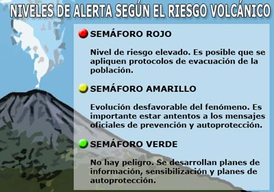

• Ante una alerta roja, mantener la calma y evacuar a un punto establecido de tu zona
• Apagar las llaves de corriente, agua y gas
.
• Estar siempre informado a través de una radio o televisión a pilas
• Cubrirse la boca, nariz y oídos con paños húmedos y los ojos con unos lentes


• En caso de no poder evacuar debe cubrir y cerrar espacios que se encuentran en puertas y ventanas
• No cruzar quebradas o ríos y alejarse lo mas posible de las cenizas que emite el volcan